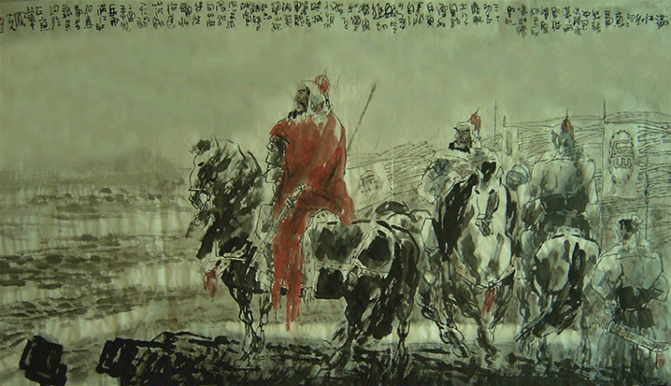

满江红
[岳飞]
怒发冲冠，凭阑处、潇潇雨歇。抬望眼、仰天长啸，壮怀激烈。三十功名尘与土，八千里路云和月。莫等闲、白了少年头，空悲切。
靖康耻，犹未雪；臣子憾，何时灭。驾长车踏破、贺兰山缺。壮志饥餐胡虏肉笑谈渴饮匈奴血。待从头、收拾旧山河。朝天阙。

这是一首气壮山河、光照日月的传世名作。此词即抒发岳飞扫荡敌寇、还我河山的坚定意志和必胜信念，反映了深受分裂、隔绝之苦的南北人民的共同心愿。全词声情激越，气势磅礴。
开篇五句破空而来，通过刻画作者始而怒发冲冠、继而仰天长啸的情态，揭示了他凭栏远眺中原失地所引起的汹涌激荡的心潮。接着，“三十功名”二句，上句表现了他蔑视功名，唯以报国为念的高风亮节，下句则展现了披星戴人、转战南北的漫长征程，隐然有任重道远、不可稍懈的自励之意。“莫等头”二句既是激励自己，也是鞭策部下：珍惜时光，倍加奋勉，以早日实现匡复大业。耿耿之心，拳拳之意，尽见于字里行间。下片进一步表现作者报仇雪耻、重整乾坤的壮志豪情。“靖康耻”四句，句式短促，而音韵铿锵。“何时灭”，用反诘句吐露其一腔民族义愤，语感强烈，力透字背。“驾长车”句表达自己踏破重重险关、直捣敌人巢穴的决心。“壮志”二句是“以牙还牙，以血还血”式的愤激之语，见出作者对不共戴天的敌寇的切齿痛恨。结篇“待从头”二句再度慷慨明誓：等到失地收复、江山一统之后，再回京献捷。全词以雷贯火燃之笔一气旋折，具有撼人心魄的艺术魅力，因而一向广为传诵，不断激发起人们的爱国心与报国情。